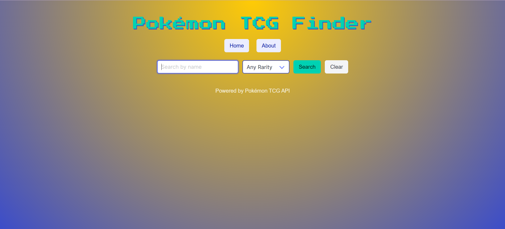
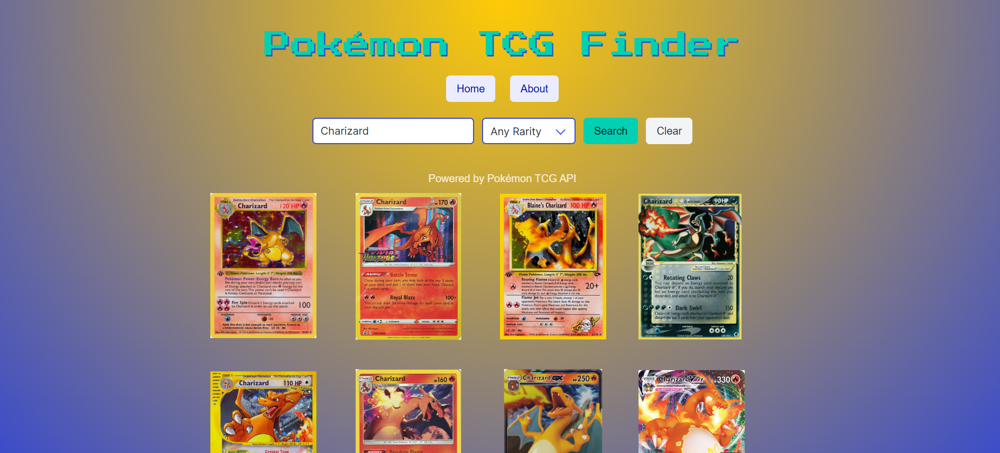

Pokemon API Finder
Pokemon API Finder
Role: UX/UI Designer & Front-End Developer (Independent Project)
Tools: React, Vite, Bulma CSS, JavaScript, HTML, CSS
Focus: Interface Design · API Integration · Responsive Layout
Project Overview
Project Overview
The Pokémon Card Finder is a web application built to help users easily search and explore Pokémon cards from the official Pokémon TCG API. My goal for this project was to create a clean, responsive interface that delivers information in an intuitive and visually appealing way.

Design Approach
Design Approach
I treated this project as both a UX and front-end challenge, focusing on user flow, accessibility, and
responsive design.
✦ User-Centered Interface: Designed a layout that prioritizes simplicity and readability. Users can search
by Pokémon name and quickly browse through cards without visual clutter.
✦ Clean Aesthetic: Used Bulma CSS for fast, consistent styling and customized components for a modern,
card-based layout inspired by Pokémon’s collectible nature.
✦ Responsive Design: Built with React and Vite, ensuring fast loading and smooth performance across desktop
and mobile screens.

User Experience
User Experience
The interface emphasizes discoverability and engagement. Cards are displayed in a grid format with hover effects and clear text hierarchy, helping users explore visually while keeping information organized. The result is a browsing experience that feels both dynamic and playful, reflecting the spirit of Pokémon itself.
⬅️ Back to Pond